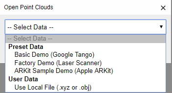
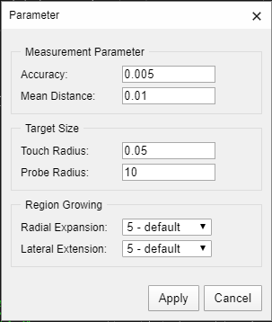
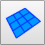
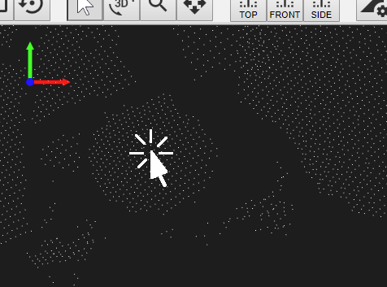
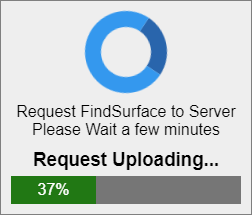
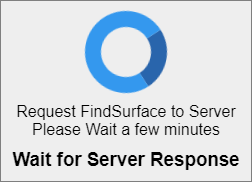
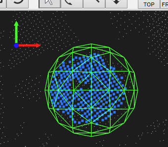

How to Open Point Cloud Data
- Click button on Top Menu.
Select Point Cloud Data you want.

- Preset Data
- Select Preset Data from Select Box.
- Click [ Apply ] button.
- Local Data
- Select [ Use Local File (.xyz or .obj) ] from Select Box.
- Select the file on your local system. We only support ascii .xyz ( first 3 columns always X Y Z coordinates ) and obj format.
- Click [ Apply ] button.
How to Manipulate Camera View
To manipulate the view, click one of the menu buttons listed below and follow the instructions below.
| No actions. | |
| Drag your mouse cursor to rotate the view (the rotation axis is always at the center of point cloud data). | |
 |
Drag your mouse cursor horizontally to zoom in/out. |
| Drag your mouse cursor to move the view. |
You can also reset the view by clicking one of the menu buttons below.
| Reset the camera view to the top view | |
 |
Reset the camera view to the front view |
| Reset the camera view to the side view |
How to Setup FindSurface Parameters
You can skip this section if you loaded one of the preset data that our server provides. The parameters are automatically set to appropriate values. Before running the FindSurface Algorithm, you have to set the algorithm parameters.
-
Click button on top menu.

-
After adjusting the parameter values, then click [ Apply ] button.
Accuracy Point measurement accuracy Mean Distance Mean distance between neighboring points Touch Radius Radius of seed region (also, it means minimum target object size) Radial Expansion Level of segmentation referenced to the direction of surface normal Lateral Extension Level of region growing in lateral direction (for plane, cylinder, cone) Note: Parameter values are dependent on a measurement unit of point cloud data. For example, if a measurement unit is meter and measurement accuracy is less than 5 mm, an appropriate value of Accuracy may be 0.005. If a measurement unit is millimeter and measurement accuracy is less than 3 mm, an appropriate value of Accuracy may be 3.
How to Run FindSurface
-
Click the button of surface types to find on Top Menu.


-
Click the ROI ( Region of Interest ) point on screen.

-
Wait for the server response.
 
-
If FindSurface succeeds, you can see the mesh and inliers points on screen as a result.

Otherwise, [ Not Found ] dialog will pop up.